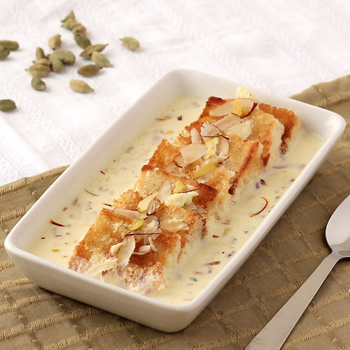

An ordered list typically is a numbered list of items. HTML 3.0 gives you the ability to control the
sequence number - to continue where the previous list left off, or to start at a particular number.
Exampe:
List of famous places in Hyderabad.
Famous Places in Hyderabad
Charminar
Chowmahalla Palace
Golconda Fort
Ramoji Film City
Qutub Shahi Tombs
Salar Jung Museum
Unordered List
An unordered list typically is a bulleted list of items. HTML 3.0 gives you the ability to customise the bullets,
to do without bullets and to wrap list items horizontally or vertically for multicolumn lists.
Example
Hyderabad Famous Food Items (Non-Vegetarian)
Biryani
Haleem
kabab
Hyderabadi Biryani.
Hyderabadi Haleem.
Hyderabadi Marag.
Mutton Samosas (source)
Kebabs or Grilled Meat.
Mutton Dalcha.
Description Lists
A DL is a fundamental finding aid for an archival collection.
It should contain information which details the provenance of a collection and its system of arrangement.
The list facilitates researchers in locating documents of specific interest to their research topic
Example:
Delicious and Famous Sweets of Hyderabad You Must Try
Qubani ka Meetha

Shahi Tukda
Sheer Khurma.
Qubani ka Meetha.
dessert made from dried apricots.
Shahi Tukda.
dessert made with bread, ghee, sugar, milk and nuts.
Sheer Khurma.
Sheer means milk in Persian and khurma means dates